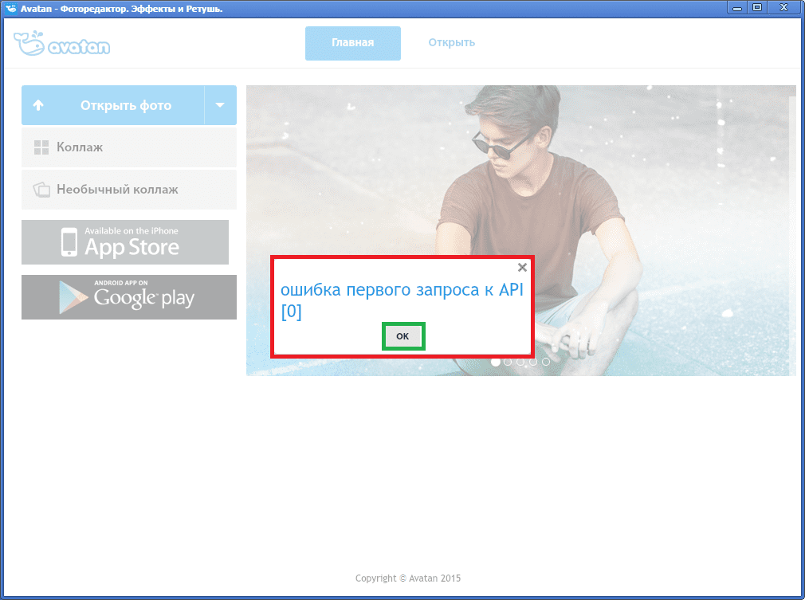

Инструкция по установке
1. После того, как вы скачали и запустили Аватан (SetupAvatan.exe), выберите или оставьте по умолчанию путь для установки программы и нажмите "Далее":
2. Обязательно проверьте чтобы стояла галочка "Создать значок на Рабочем столе" и нажмите "Далее":

3. Нажмите "Установить":
4. Дождитесь завершения установки:
5. Запустите программу:
6. После загрузки программы может появится такое окошко с ошибкой. Просто закройте его:
7. Пользуйтесь Аватаном на компьютере :)